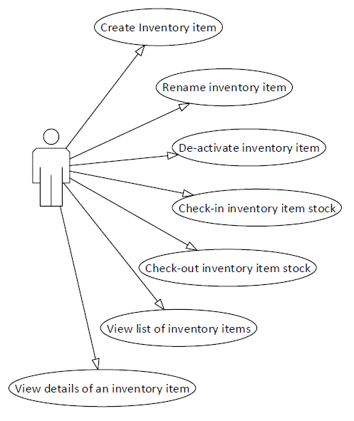

Exposing CQRS Through a RESTful API
Command Query Responsibility Segregation (CQRS) is an architectural pattern proposed by Greg Young that segregates reads (queries) and writes (commands) of a system into two separate subsystems. Commands are usually asynchronous and stored in a transactional storage while reads are eventually consistent and retrieved from de-normalised views. This article proposes and demonstrates an approach for building a RESTful API on top of CQRS systems. The approach joins HTTP semantics and resource-based style of REST APIs with distributed computing concerns such as eventual consistency and concurrency. Also available is a prototype API which has been built on top of Greg Young's m-r CQRS prototype - also known as SimplestPossibleThing. m-r is arguably the de-facto CQRS prototype that has inspired many teams to adopt and build CQRS systems. Despite its simplicity this m-r prototype is able to demonstrate real world opportunities and challenges of RESTful CQRS. In the next section we review the m-r domain and then explore features of the API design. At the end, we discuss the choices made as well as the concepts and theoretical side of RESTful m-r. The m-r Domainm-r models a simplistic domain of inventory management. You can create new inventory items (think of it as a product type), rename or de-activate (logical delete) them. De-activated items cannot be viewed anymore but lists of all active items can be retrieved and we can drill down into the details of each item. You can also check-in or check-out stock against these inventory items specifying the number of stock added or removed. In other words, we build up stock and then start using it. Viewing the list of items or details of an item is achieved through queries which are synchronous. Any changes to the state of items are achieved using commands which in the real world are asynchronous but the implementation here ends up being synchronous due to using an in-process Event Bus and handlers.  m-r implements CQRS: commands and queries are stored separately and are each handled by completely different parts of the system. On top of CQRS, m-r uses Event Sourcing as its persistence mechanism. In this approach, changes to domain models are captured as a series of events and these events are stored in the order they have been invoked. In order to build the current state of a model, all events need to run in the order they have arrived, in other words, the state of entities are never persisted. For example, if we create an inventory item and rename it twice, we will have oneInventoryItemCreated and two InventoryItemRenamed events and they will be stored in the Event Store. Events are sequential and every event has a version number which can be used for concurrency checks. For example, if an inventory item is renamed against version 2 but another rename had happened against the same item and current version is 3, this will result in a concurrency exception. Commands normally have a one-to-one relationship with the Domain Events and after applyingthe command, the domain model raises an Event to be stored. Domain Event is the cornerstone of Event Sourcing and unlike cross-bounded context events, they are granular and contain the least amount of information required. As such, they are not a great integration tool between different bounded contexts. In addition to an in-process Event Bus, m-r uses an In-Memory Event Store. This store is basically a hashmap using the id of the model as the key and keeps track of the events against the model. For more information on CQRS and Event Sourcing, you can read Greg Young's mini-book. Building a REST API On TopIf you prefer to get a feel for the implementation first, feel free to look at the working prototype that is currently (but temporarily) available here. You are encouraged to view and examine the HTTP traffic in this simple example using fiddler or browser development tools. Source code for the API and a basic Angular application is available on GitHub. But we emphasise, the implementation and technologies used here are not the key. The focus should be on the approach and HTTP presentation. Shaping the public domainThe most important responsibility of the API Layer is to model the underlying domain as resources and expose it with HTTP semantics. During this process, the API Layer creates aPublic Domain which is composed of resources (and their Unique Locator -> URL) and input/output messages. The simpler the underlying domain, the more similarity the public domain has to the underlying domain. (Click on the image to enlarge it)
In our case, we have a public domain which is similar to the underlying domain but even in this simple domain we are unable to expose the underlying domain directly: either the internals of the domain leaks out or the internals do not have properties needed at the API Layer. For example, all internal commands have an integer Version property used for concurrency while in the public domain, this property is string. As we will see later this property will be used for ETag which according to HTTP specification must be opaque. So in brief, we have created public domain classes which represent internal domain classes with some difference. Something that is commonly referred to as a View Model. This term is undesirable since it expresses server chauvinism towards the public domain as if it is a dummy model, so we prefer the term "output model". This applies to input and output messages (commands and output models). ResourcesIt feels natural that we should have an InventoryItem resource so we expose the domain's single root entity as a single resource - conveniently at /api/InventoryItem. Each inventory item will be sitting at /api/InventoryItem/{id} - m-r uses GUIDs for Id. This single resource root can fully represent our domain. One alternative is to have/api/InventoryItem/{id}/Stock resource for adding/removing stock (check-in and remove items). ). This per-se does not have any advantage but is just a nicer presentation of the resource. The original approach is simpler and that is what has been used here. (Click on the image to enlarge it)
QueriesWe have two queries: GetInventoryItems and GetInventoryItemDetails. They are exposed with GET methods at /api/InventoryItem and /api/InventoryItem/{id}. GetInventoryItems retrieves a list of only Names and Ids of the items - as JSON or XML depending on the ACCEPT header (this feature comes out of the box in ASP.NET Web API). All GET requests present an opportunity for caching if the resource is suitable for caching.GetInventoryItems returns InventoryItemListDataCollection as the output message. Generating an ETag based on the hash of the content is possible but we can concatenate Ids and Names in the list and send the hash as an ETag to the client (e.g. browser here). The client can cache the resource and make conditional requests using If-Non-Match against the ETag. Resources here are set up to be served with max-age of zero so that the client should always make a conditional GET but we could have equally chosen any arbitrary expiry. GET /api/InventoryItem HTTP/1.1 Accept:application/json, text/plain, */* Accept-Encoding:gzip,deflate,sdch If-None-Match:"LdHipfxR7BsfBI3hwqt2BLsno8ic98KmrIA1y67Nnw4=" Results in HTTP/1.1 304 Not Modified ETag: "LdHipfxR7BsfBI3hwqt2BLsno8ic98KmrIA1y67Nnw4=" GetInventoryItemDetails returns details of a single item. This includes its Id, Name and CurrentCount- the latter is the number of items in stock. The internal domain includes Version in its read model but having a numeric version as ETag can cause security issues as the client can guess the next value. As such, we have encrypted the Version value using AES and presented as ETag for InventoryItemDetails. Implementing ETag in each action can be overbearing for the API Layer so we have definedIConcurrencyAware interface: public interface IConcurrencyAware { string ConcurrencyVersion { get; set; } }
Any output model supporting ETag implements this interface and the API Layer can read the value and set the ETag if output model supports it. On the other hand, the API Layer responds to conditional GET requests by comparing the ETag generated with the one(s) sent by the client in the If-None-Match header. All this has been comfortably implemented in a single global filter: ConcurrencyAwareFilter. It is important to remember that adding, removing or renaming an item should result in cache invalidation of the list. This can be seen here (all conditional GET logic is done at the browser level and no custom code is required): GET /api/InventoryItem HTTP/1.1 If-None-Match:"CWtdfNImBWZDyaPj4UjiQr/OrCDIpmjVhwp8Zjy+Ok0=" results in a full response with 200 status and a new ETag: HTTP/1.1 200 OK Cache-Control:max-age=0, private Content-Length:68 ETag:"0O/961NRFDiIwvl66T1057MG4jjLaxDBZaZHD9EGeks=" Content-Type:application/json; charset=utf-8; domain-model=InventoryItemListDataCollection; version=1.0.0.0; format=application%2fjson; schema=application%2fjson; is-text=true ... Notice that the Content-Type header contains extra parameters. This is an implementation of"Five Levels of Media Type" or 5LMT where instead of cramming all information into a single token, we use different parameters to convey different levels of data that can be useful to clients with different level of intelligence. This topic is expanded upon further down. CommandsQueries naturally map to GET while commands need to be mapped to POST, PUT, DELETE and PATCH. Mapping HTTP verbs to CRUD operations is a popular notion, but in the real world a clean one-to-one mapping between verbs and database operations occurs much less often. In fact, REST API is not a thin shell on top of a persistence store, quite the contrary, it is the door to the richness of the business domain, its operations and workflows. As such it must be able to express such axes of intent without resorting to custom verbs. One common approach is using RPC-style resources for example /api/InventoryItem/{id}/rename. While this seemingly removes the need for arbitrary verbs, it is against REST's resource-oriented presentation. We need to be reminded that a resource is a noun and HTTP verb is theverb/action and self-descriptive messages (one of the tenets of REST) are the vehicle to convey other axes of information and intent. In fact the command in the payload of the HTTP message should be enough to express any arbitrary action. However, relying on the body of the message has problems of its own since the body is usually delivered as a stream and buffering the body in its entirety before identifying action is not always possible nor wise. Here we present an approach based on level 4 (domain model) of 5LMT where the command type is presented as a parameter of the Content-Type header: PUT /api/InventoryItem/4454c398-2fbb-4215-b986-fb7b54b62ac5 HTTP/1.1 Accept:application/json, text/plain, */* Accept-Encoding:gzip,deflate,sdch Content-Type:application/json;domain-model=RenameInventoryItemCommand This is required to channel the request to the appropriate handler on the server. Is this not leaking too much information over to the clients? Not at all. Schema (and name) of the input and output messages are part of the Public Domain and clients must have full access to and they are expected to take dependency upon the schemas. Our client-side implementation uses a minimal code to achieve this. An Angularjs decoratorwraps the $http service and reads the prototype of the payload and adds the extra parameter to the Content-Type header. As long as we keep the name of the Javascript constructor function the same, there should be no problem. So now that we have solved the problem of identifying the action being invoked, we need to semantically map our commands to HTTP verbs. When mapping a command to a verb, it is key to choose the correct verb not just semantically but also in terms of Idempotency (safety of the verb is not a concern here since none of the command verbs are safe). PUT, PATCH and DELETE are idempotent while POST is not (calling idempotent verbs multiple times produces the result of calling them once). CreateInventoryItemCommandCreateInventoryItemCommand naturally fits the POST method even with the CRUD paradigm (only important headers shown): POST /api/InventoryItem HTTP/1.1 Content-Type:application/json;domain-model=CreateInventoryItemCommand {"name": "CQRS Book"}
and the response is: HTTP/1.1 202 Accepted Location: http://localhost/SimpleCQRS.Api/api/InventoryItem/109712b9-c3d5-4948-9947-b07382f9c8d9 We return the URL of the item that is going to be created (remember it is all async) in the location header. DeactivateInventoryItemCommandAs we said, de-activating items is basically a logical delete. Also the act of deleting is idempotent and deleting an item multiple times creates the same effect. As such we will use DELETE option against an item to de-activate it (this command needs an empty payload): DELETE /api/InventoryItem/f2b75f21-001a-4eed-b8f3-35bf5e4e9b0d HTTP/1.1 Content-Type:application/json;domain-model=DeactivateInventoryItemCommand {}
and the response is: HTTP/1.1 202 Accepted We can send the id in the payload but we are already providing this in the URL.DeactivateInventoryItemCommand constructor function's only responsibility is to allow for successful setting of the domain-model parameter. RenameInventoryItemCommandRenameInventoryItemCommand is slightly more interesting than the others. First of all, renaming an inventory item is nothing but updating it. So it is only fair to use the PUT verb. On the other hand, what if you rename the item while another colleague also renames it to another value? This is basically the concurrency problem. HTTP provides means of safeguarding against concurrent updating of the resources using If-Unmodified-Since and If-Match. Here we use ETag so we will be using If-Match: PUT /api/InventoryItem/f2b75f21-001a-4eed-b8f3-35bf5e4e9b0d HTTP/1.1 Content-Type:application/json;domain-model=RenameInventoryItemCommand If-Match:"DL1IsUoH709K+N5TXFzlQeQI5arO8r/U0SzXcRhuXLc=" {"newName": "CQRS Book 1"}
The value of the ETag is picked up in the Angularjs controller and added to the model and later is used for the conditional PUT. As you can see the value of the ETag is nothing but the version number of the domain model but we have opacified it according to HTTP specification - by encrypting it. This value gets picked up on the server, decrypted and reverted back to a version number. If the version does not match, the domain will raise aConcurrencyException where it is picked up at the API Layer by theConcurrencyExceptionFilterAttribute and expressed in HTTP semantics: HTTP/1.1 412 Precondition Failed This is the perfect example of how HTTP's concurrency can work with CQRS concurrency checks. CheckInItemsToInventoryCommand and RemoveItemsFromInventoryCommandThese two commands are even more interesting. We add or remove a number of items to or from the stock. In one sense, we are updating an inventory item's count so it is tempting to implement this as a PUT (or even better as PATCH). However, neither of these commands are idempotent (for example running CheckInItemsToInventoryCommand twice will add items twice) so the most suitable verb is actually POST. The client sends the payload's domain model name in a parameter in Content-Type header as we have seen before. POST /api/InventoryItem/f2b75f21-001a-4eed-b8f3-35bf5e4e9b0d HTTP/1.1 Content-Type:application/json;domain-model=CheckInItemsToInventoryCommand {"count": "230"}
and the response is the usual one: HTTP/1.1 202 Accepted Other HTTP aspectsThere are other aspects of HTTP that are useful to implement. HEAD is an important verb which results in the same response as the GET without any payload. We have implemented HEAD on all GET resources. For example: HEAD /api/InventoryItem HTTP/1.1 Accept:application/json, text/plain, */* Accept-Encoding:gzip,deflate,sdch Returns HTTP/1.1 200 OK ETag: "LdHipfxR7BsfBI3hwqt2BLsno8ic98KmrIA1y67Nnw4=" Implementation here directs the HEAD requests to the GET handler and then the framework at the end takes care of removing the content. Since the pipeline is fully triggered, we get the ETag nicely on the response. Another important verb to implement is OPTIONS. This verb has a lot of potential to serve API documentation but here we simply return the verb supported at the resource: OPTIONS /api/InventoryItem/f2b75f21-001a-4eed-b8f3-35bf5e4e9b0d HTTP/1.1 Returns HTTP/1.1 200 OK Allow: GET,POST,OPTIONS,HEAD,DELETE,PUT Content-Length: 46 Content-Type: application/json; charset=utf-8; domain-model=String%5b%5d; version=4.0.0.0; format=application%2fjson; schema=application%2fjson; is-text=true ["GET","POST","OPTIONS","HEAD","DELETE","PUT"] Please note the Allow header in the response that is mandatory in response to OPTIONS request. HTTP Specification does not specify a canonical payload response to OPTIONS and here we send the allowed verbs as a string array (note the String[] appearing in domain-model as UrlEncoded). This verb potentially can send the API documentation in one of many emerging schemas and languages. Calling a method outside this range results in a method not found or 405 status that comes out of the box in ASP.NET Web API: PUT /api/InventoryItem HTTP/1.1 {}
Returns HTTP/1.1 405 Method Not Allowed Allow: POST,GET,HEAD,OPTIONS {"message":"Http Method not supported"}
DiscussionThis section expand upon the theoretical concepts and some of the difficult and potentially controversional decisions that were made. Concurrency check is optionalIn the original m-r implementation, all commands (except for CreateInventoryItemCommand which implicitly has the version of 0) have an integer CurrentVersion property. In this implementation they have been changed to optional (nullable in C#). On one hand, the server is responsible for ensuring integrity of its state. As such it cannot and should not depend on the version number provided by the clients. Concurrency check is provided as a feature to the client rather than server's mechanism to ensure integrity of the domain. If the client is concerned about the concurrency, it can optionally send the version number - which has been provided to them as an opaque ETag - encrypted version number. Bear in mind concurrency checking is a different concern from server events' version numbers - that remains internal to the server. On the other hand, concurrency checks do not make sense for some operations. For example if two clients add 20 items (using CheckInItemsToInventoryCommand) against the stock at the same time when both having version n of the item, one of these commands fail while there is no need to: 40 items are being added. This issue is magnified in a highly volume scenarios. Imagine customers rushing to buy a copy of the latest Harry Potter book on Amazon - they will experience concurrency errors most of the time. It is not accidental that in HTTP concurrency is considered for PUT (and PATCH) calls and is all but optional. While this concurrency check can be done asynchronously, all effort must be made to make it synchronous so that when we return status 202 (accepted), we have already confirmed there is no concurrency conflict. Five Levels of Media Type (5LMT) vs. minting new media typesOne of the approaches commonly seen in the community is to create new media types - usually referred to as minting new media types. For example using: Content-Type:application/vnd.InventoryItemListDataCollection.1.0.0.0+json; This uses a non-canonical representation of the subtype of the media type which has become a common practice (a convention really) to split the subtype into custom/formal elements using "+" sign in the middle. There are registered media types such as application/rss+xml andapplication/atom+xml that use this convention. These two examples are sitting at the level 3 (or schema) of the media type levels while application/xml is at level 2 (format). In a sense,application/atom+xml is just application/xml as for the format while it sticks to ATOM schema. While this convention can be formalised in the future ratifications of HTTP Specification, it does not solve the problem of ever expanding set of media types. First of all, using unregistered media types is discouraged by HTTP specification, and so is the use of the above Content-Typevalue. In fact, if we were to register a media type for every combination of five different levels in all APIs present, IANA would probably need to employ an army of registrants to deal with the massive demand. On the other hand, many client systems use a dictionary-based media type handling that would be unable to deal with minted media types. So using 5LMT allows for the existing clients to carry on working as before while more advanced clients can take advantage of extra levels provided as separate entities. Protecting internal domain using a Public Domain is essentialIt is very important to abstract internals of the server from the clients. As described earlier, smaller domains will have a public domain similar to the internal domain but even in the case of m-r we could not directly expose the internal domain and had to create separate models to present what the client is supposed to see and interact with. This public domain needs to be documented and presented to the clients. This is one space to watch as we are witnessing emergence of different approaches and practices (starting from WADL to Swagger, RAML, RestDown, etc). ConclusionExposing a CQRS service through a REST API is not only possible but the richness of HTTP semantics allows for a fluent and efficient API to be built on top. This process involves building a public domain composed of commands, queries (input/output messages) and resources that are concurrency and caching aware. Also we need to map internal domain(s queries and commands to HTTP verbs and use status codes to convey state transitions and exceptions. Use of 5LMT helps with building resources that are fully RESTful and not RPC-styled. All of this has been demonstrated in a minimal but working prototype implemented in ASP.NET Web API and AngularJS. |
|